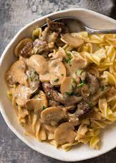

Beef Stroganoff

Creamy Slow Cooked Beef Stroganoff
We will be making a creamy, melt in your mouth beef stroganof. This recipe has the hard work taken out of it thanks to the slow cooker.
Ingredients
- 1 cup Shamrock Farms® Premium Sour Cream
- 3 tablespoons vegetable oil, divided
- 1 pound white mushrooms, trimmed and cut into thick slices
- 1 pinch salt
- 1 large white onion, minced
- ¼ cup tomato paste
- 6 cloves garlic, minced
- 2 teaspoons dried thyme
- ⅓ cup all-purpose flour
- 1 ½ cups low-sodium beef broth
- ½ cup dry white wine
- ⅓ cup soy sauce
- 2 bay leaves
- 4 pounds boneless beef chuck roast, trimmed of excess fat and cut into 1 1/2-inch chunks
- salt and ground black pepper to taste
- 1 tablespoon Dijon mustard
- ½ teaspoon dried dill
Steps
- Heat a 12-inch skillet over medium heat. Add 1 tablespoon oil. Add mushrooms and sprinkle with a pinch of salt. Let mushrooms cook for 5 to 10 minutes, or until softened. Pour mushrooms into a 5-quart slow cooker.
- Heat remaining 2 tablespoons oil in the now empty skillet. Add onion, tomato paste, garlic, and thyme. Cook until onions have softened, stirring regularly, about 5 to 10 minutes. Stir in flour and cook for 1 minute.
- Whisk in broth and wine, scraping up any browned bits. Be sure to whisk until there are no flour lumps. Pour into the slow cooker. Stir in soy sauce and bay leaves.
- Season beef chunks with salt and pepper. Add beef chunks to the slow cooker, pushing them into the sauce.
- Cover and cook until beef is tender, 5 to 7 hours on High or 9 to 11 hours on Low. Skim any accumulated fat from the surface. Discard bay leaves.
- Add 1 cup of cooking liquid from slow cooker to a bowl. Stir in Shamrock Farms Premium Sour Cream and mustard. Return mixture to the slow cooker, stirring to combine. Season with additional salt, pepper, and dill to taste.